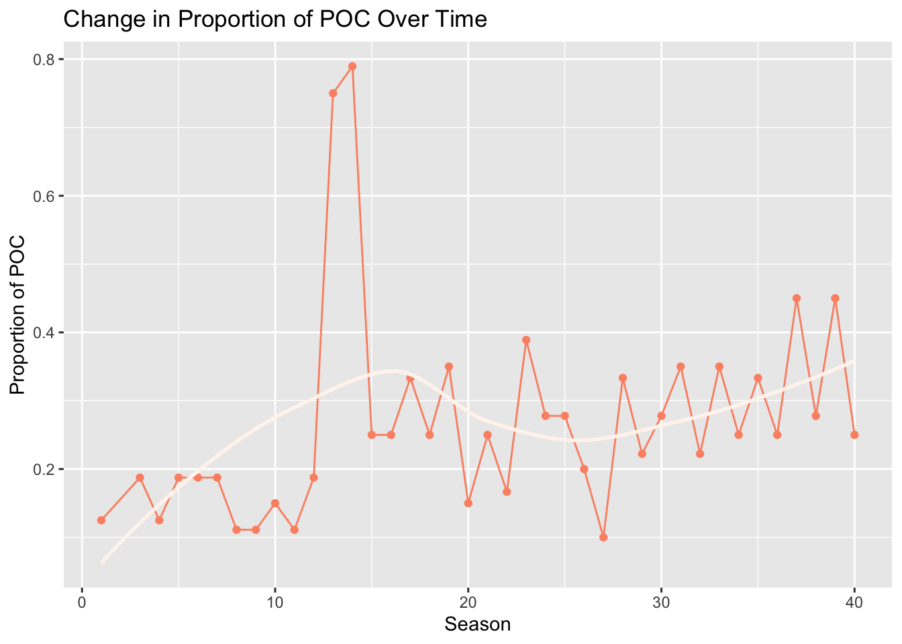
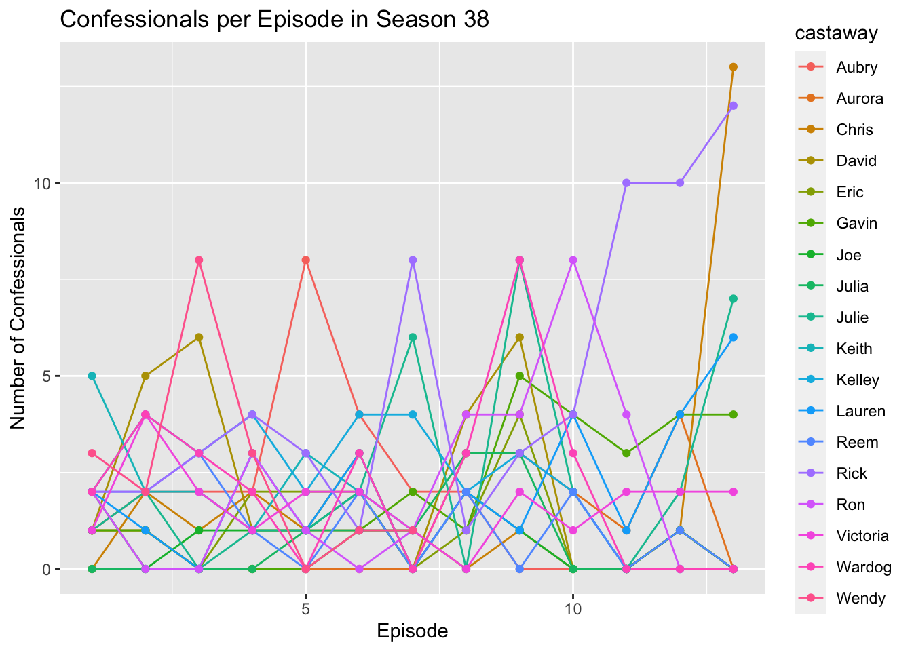
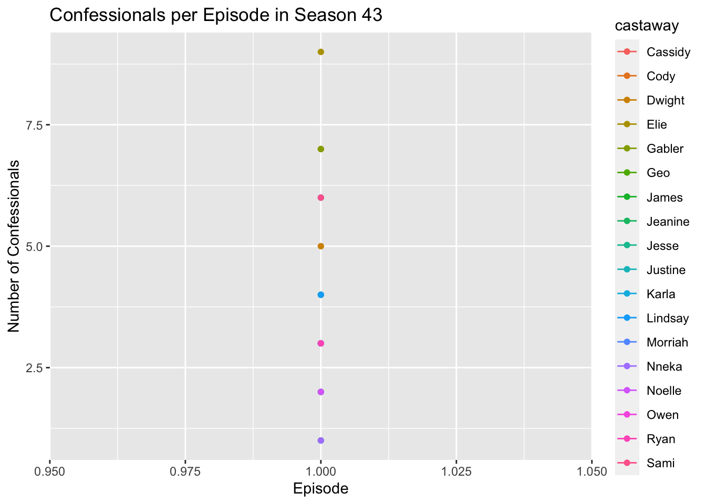
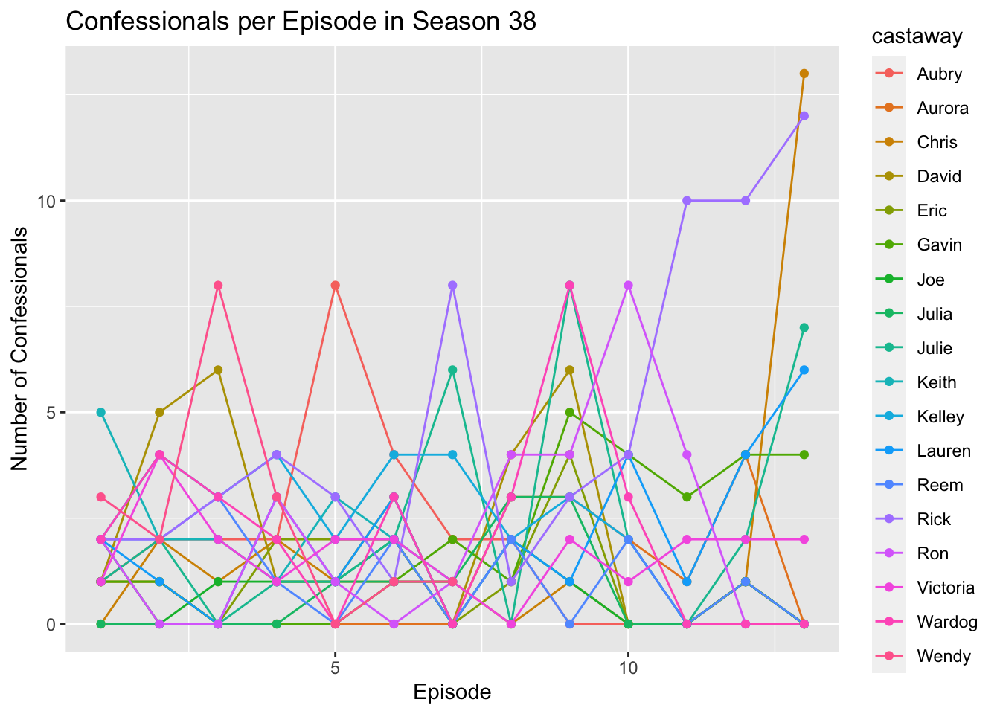
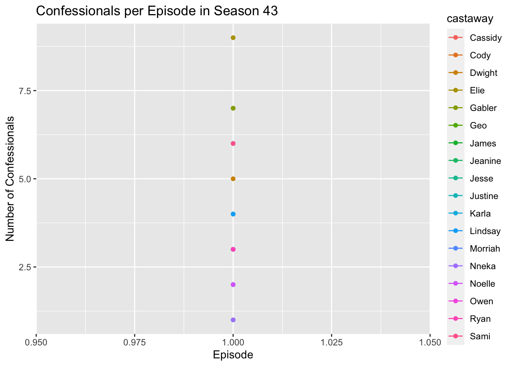

## reading in data
survivor_data_final =
read.csv("data/survivor_data_final.csv")
EDA Tables
## overall summary table
survivor_data_final %>%
select(gender, poc, personality_type_binary, age_during_show, days_survived) %>%
tbl_summary(type = list(gender~ "categorical", poc~ "categorical", personality_type_binary~ "categorical", age_during_show ~ "continuous", days_survived ~ "continuous"),
statistic = list(all_continuous() ~ "{mean} ({sd})"),
label = list(c(gender) ~ "Gender",
c(poc) ~ "Race Identifier",
c(personality_type_binary) ~ "Personality Type",
c(age_during_show) ~ "Age During Show (Years)",
c(days_survived) ~ "Survival Time on Show (Days)")) %>%
bold_labels()
| Characteristic |
N = 728 |
| Gender |
|
| Female |
356 (49%) |
| Male |
368 (51%) |
| Unknown |
4 |
| Race Identifier |
|
| POC |
199 (27%) |
| White |
525 (73%) |
| Unknown |
4 |
| Personality Type |
|
| Extrovert |
401 (56%) |
| Introvert |
320 (44%) |
| Unknown |
7 |
| Age During Show (Years) |
33 (10) |
| Survival Time on Show (Days) |
24 (12) |
## days survived by variables of interest (planning to add tabs for these 3 tables)
## personality type
survivor_data_final %>%
group_by(personality_type_binary) %>%
summarize(n_personality_type = n(),
mean_days_survived = mean(days_survived)) %>%
na.omit() %>%
knitr::kable(digits = 3, col.names = c("Personality Type", "n", "Mean Days Survived"))
| Extrovert |
401 |
23.993 |
| Introvert |
320 |
23.606 |
## POC
survivor_data_final %>%
group_by(poc) %>%
summarize(n_poc = n(),
mean_days_survived = mean(days_survived, na.rm = TRUE)) %>%
na.omit() %>%
knitr::kable(digits = 3, col.names = c("POC", "n", "Mean Days Survived"))
| POC |
199 |
22.558 |
| White |
525 |
24.259 |
## gender
survivor_data_final %>%
group_by(gender) %>%
summarize(n_gender= n(),
mean_days_survived = mean(days_survived, na.rm = TRUE)) %>%
na.omit() %>%
knitr::kable(digits = 3, col.names = c("Gender", "n", "Mean Days Survived"))
| Female |
356 |
23.051 |
| Male |
368 |
24.508 |
Change in Diversity (POC)
survivor_poc_over_time = survivor_data_final %>%
group_by(version_season, poc) %>%
summarize(count = n()) %>%
mutate(freq = count / sum(count)) %>%
filter(poc == "POC") %>%
separate(col = version_season, into = c('NA', 'season'), sep = 2) %>%
dplyr::select(-"NA") %>%
mutate(season = as.numeric(season))
ggplot(data = survivor_poc_over_time, aes(x = season, y = freq, group = 1)) +
geom_line() +
geom_point() +
geom_smooth(se = FALSE) +
ggtitle("Change in Proportion of POC Over Time ") +
xlab("Season") + ylab("Proportion of POC")
Change in Diversity (Gender)
survivor_gender_over_time = survivor_data_final %>%
group_by(version_season, gender) %>%
summarize(count = n()) %>%
mutate(freq = count / sum(count)) %>%
filter(gender == "Female") %>%
separate(col = version_season, into = c('NA', 'season'), sep = 2) %>%
dplyr::select(-"NA") %>%
mutate(season = as.numeric(season))
## `summarise()` has grouped output by 'version_season'. You can override using
## the `.groups` argument.
ggplot(data = survivor_gender_over_time, aes(x = season, y = freq, group = 1)) +
geom_line() +
geom_point() +
geom_smooth(se = FALSE) +
ggtitle("Change in Proportion of Women Over Time") +
xlab("Season") + ylab("Proportion of Women")
## `geom_smooth()` using method = 'loess' and formula = 'y ~ x'

ggplot(survivor_data_final, aes(x = age_during_show)) +
geom_histogram(bins = 15) +
ggtitle("Distribution of Ages") +
xlab("Age (During Show)") + ylab("Count")
Confessionals per Season
confessionals_df = confessionals %>%
filter(version == "US") %>%
dplyr::select(-c(version, version_season, season_name))
seasons = list()
for (i in 1:43)
{
seasons[[i]] = confessionals_df %>%
filter(season == i) %>%
group_by(castaway)
}
for (i in 1:43)
{
print(ggplot(data = seasons[[i]], aes(x = episode, y = confessional_count, color = castaway)) +
geom_line() +
geom_point() +
ggtitle(paste0("Confessionals per Episode in Season ", i)) +
xlab("Episode") + ylab("Number of Confessionals"))}

 
